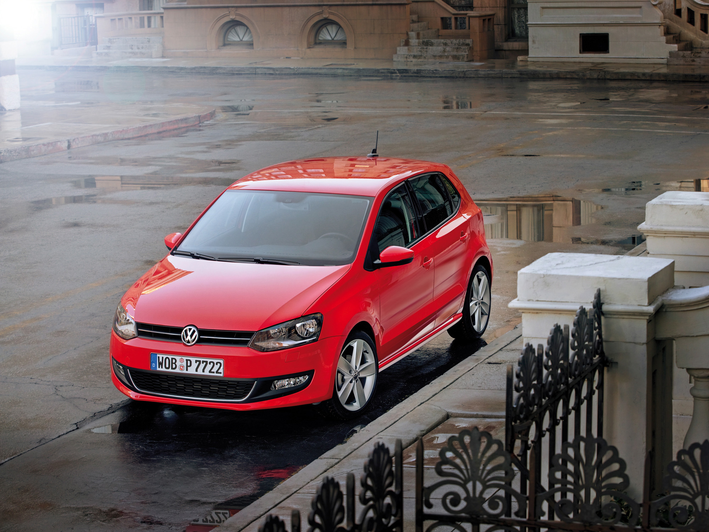
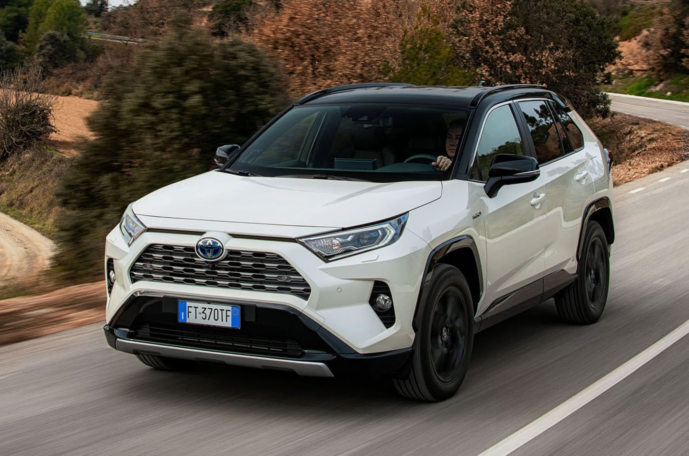
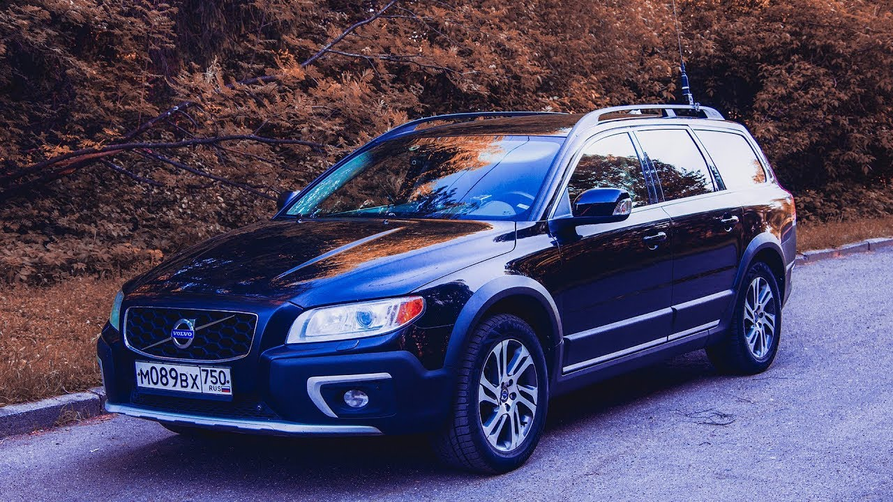
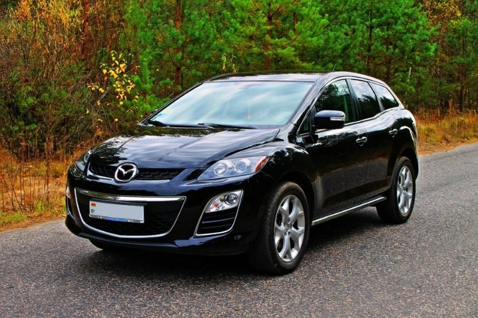

Двигатели объемом до 2 литров
В одном из крупных автосалонов по продажам подержанных автомобилей корреспонденту Autonews.ru предложили обратить внимание на Renault Logan, Sandero и Duster с 16-клапанным двигателем объемом 1,6 литра. Мощность этого мотора составляет 102 или 116 л.с.
«Это очень надежный мотор с большим ресурсом. Серьезных проблем с ним не должно быть даже при большом пробеге», — объяснил сотрудник торговой компании.
В свою очередь, эксперт по подбору автомобилей с пробегом и автор YouTube-канала AvtoRevizorro Кирилл Чернов отметил, что очень неплохо себя показывает связка атмосферного двигателя 1,6 и «классического автомата» на автомобилях VAG. Это Volkswagen Polo, Skoda Rapid и Octavia. По словам эксперта, такой агрегат без проблем преодолевает полмиллиона километров. Главная проблема, что «не замученную машину» с таким агрегатом редко сейчас можно найти в продаже.
«Главное не брать машины после каршеринга и такси — там от ресурса осталось не много», — подчеркнул эксперт.

Двигатели объемом 2 литра
Среди атмосферных «четверок» объемом 2 литра автоэксперт и член «Союза автоэкспертов и оценщиков» Виталий Пуняков рекомендовал обратить внимание на двигатели Toyota, которые заслужено считаются достаточно выносливыми и надежными. Такие агрегаты устанавливаются на модели Corolla, Avensis, Camry и RAV4.
Также в категорию двигателей с высоким ресурсом Виталий Пуняков отнес 2-литровый ниссановский двигатель с индексом MR20DD. Этот мотор можно встретить на кроссоверах Qashqai и X-Trail. Кроме этого, эксперт высоко оценил надежность 2-литровых моторов от Renault, которые ставятся на Duster, Kaptur и Nissan Terrano.

Моторы объемом более 2 литров
В этой категории двигателей первое место Кирилл Чернов присудил атмосферном мотору объемом 2,4 литра, которым комплектовали Volvo S60 первого поколения и S80. Эксперт назвал этот мотор «крепким и простым в содержании».
Также эксперт отметил атмосферную «шестерку» 3,2 на Volvo ХС70 и ХС90 предыдущих поколений. По его словам, «полмиллиона километров для такого двигателя — обкатка».
Наконец, для тех автомобилистов, которым нужна машина с выносливостью и ресурсом грузовика, эксперт порекомендовать американские V8 от GM и Chrysler. Он подчеркнул, что независимо от поколения и возраста — это крепкие и выносливые машины, которые будут продолжать ехать, пока их полностью не заберет коррозия.

Авто с какими двигателями покупать не стоит
«Черный список» моторов с которыми автоподборщики категорически не советуют связаться, открывает турбодвигатель объемом 2,3 л от Mazda CX-7. Кирилл Чернов назвал этот агрегат настоящий катастрофой, из-за чего посоветовал вообще забыть о существовании в целом неплохого японского автомобиля.
Также в антирейтинг попали битурбо двигатель объемом 4,4 л от BMW, 3,5-литровый атмосферник Mercedes-Benz, дизельный агрегат объемом 2,7 л от Land Rover, 3,2-литровый атмосферный мотор VAG, 1,6-литровый мотор Mini и Peugeot, а также двигатель объемом 3,5 (Honda Pilot прошлого поколения).
Представитель одной из компаний, торгующей подержанными автомобилями, также пожаловался на популярные корейские модели, где, по его словам, не до конца решены проблемы с задирами двигателя (Kia Sportage и Hyundai Creta). Кроме этого, стоит пройти мимо бу машин Volvo c 2,5-литровым турбодвигателем. По словам специалиста, такой мотор может «подкинуть неприятные проблемы с блоком».
